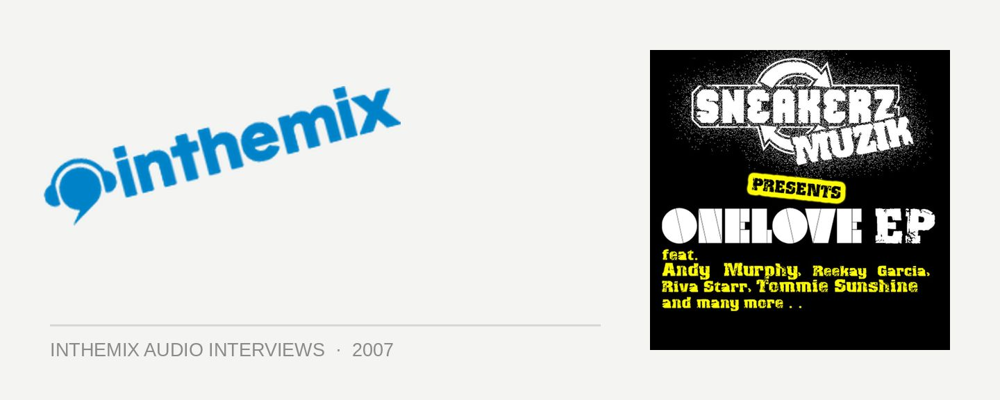

Andy Murphy [Audio]: Onelove's his first love
STREAMING AUDIO INTERVIEW
Andy Murphy is sitting pretty as Onelove’s newest golden boy, and if the success of the club’s past and current residents – like Grant Smillie, Dirty South, Kaz James and Goodwill – is any yardstick of what he’s aiming to achieve in his own career, he’s got a lot to look forward to.
At only 23 years of age Andy’s has been picked by the club brand to mix one of the discs in their latest CD release, ‘Smash Your Stereo’, alongside Jason Herd of the UK and Junior Sanchez of the US. He started DJing at the age of 18, and his profile is on the rise nationally after securing the #28 position in the 2006 inthemix50.
He’s found himself booked to play at some of the biggest dance events and festivals, including Summadayze, Mischief, Pacha, Two Tribes, New & Used, Together, Full House and Godskitchen, sharing the stage with luminaries like Felix Da Housecat, Jacques Lu Cont, Roger Sanchez, Carl Cox and DJ Sneak, to name a few.
Not content to simply rest on his laurels and rely solely on DJing to pay the bills, Murphy’s also carving out a niche for himself in the production game, teaming up with friends Lionel Towers and Gerard Sidhuto form The Little Rascals. Their remix of the Stafford Brothers’ ‘More Than A Feeling’ scored them a spot in the ARIA Club Charts, and has now been followed up with their ‘Essence’ EP.
Andy recently kicked off a massive national tour to launch ‘Onelove Vol 4: Smash Your Stereo’. If he hasn’t already been through your town, be sure to check him out when he visits throughout August, September and October.
3 Aug – Adelaide, Electric Circus
4 Aug – Gold Coast, Platinum
10 Aug – Perth, Limelite
11 Aug – Melbourne, Prince Of Wales
17 Aug – Canberra, Academy
18 Aug – Launceston, Lonnies
24 Aug – Wollongong, Cooneys
25 Aug – Cairns, Velvet Underground
31 Aug – Terrigal, Keylargo
1 Sep – Brisbane, Monastery
7 Sep – Ballarat, 21 Arms
14 Sep – Mackay, Platinum Lounge
15 Sep – Bendigo, Black Swan Nightclub
20 Sep – Darwin, Discovery
21 Sep – Mildurah, Doms Nightclub
22 Sep – Geelong, Club 4Play
28 Sep – Magnetic Island, Base
29 Sep – Arlie Beach, Magnums
5 Oct – Toowoomba, Gladstone Hotel
6 Oct – Traralgon, Inferno
‘Onelove Vol 4: Smash Your Stereo’ is available now through Onelove/SonyBMG.